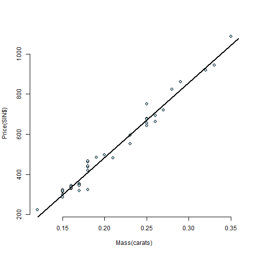

How much is the diamond?
This Shiny App is to display the relationship of weight and price of diamond, and to provide prediction of price for a given weight using linear regession.
For a copy of the Shiny App:
Steven Fu
Software Developer
How much is the diamond?
This Shiny App is to display the relationship of weight and price of diamond, and to provide prediction of price for a given weight using linear regession.
For a copy of the Shiny App:
The diamond dataset is from the build-in dataset. To get the data use library(UsingR); data(diamond).
Take a look the dataset:
library(UsingR)
data(diamond)
str(diamond)
## 'data.frame': 48 obs. of 2 variables:
## $ carat: num 0.17 0.16 0.17 0.18 0.25 0.16 0.15 0.19 0.21 0.15 ...
## $ price: int 355 328 350 325 642 342 322 485 483 323 ...
The relationship of price and weight is shown below(linear regression).

User enters a weight in carats (0.15 - 0.35). The app will predict the price and the range using linear regression model. For example, user enters 0.20 as weight.
library(UsingR)
data(diamond)
fit <- lm(price ~ carat, data = diamond)
values<-predict(fit, newdata = data.frame(carat = 0.20 ), interval = "prediction")
values
## fit lwr upr
## 1 484.5791 419.8196 549.3385
The 484.5790631 is the predicted price; and 419.8196032 ~ 549.3385231 is the predicted range.